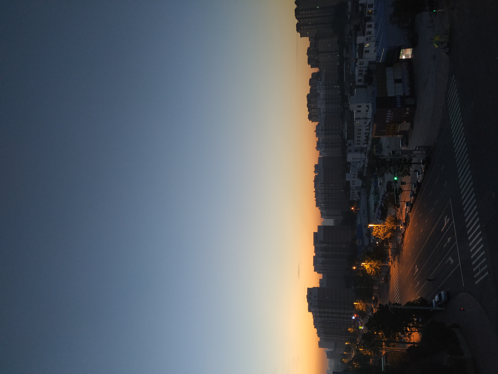
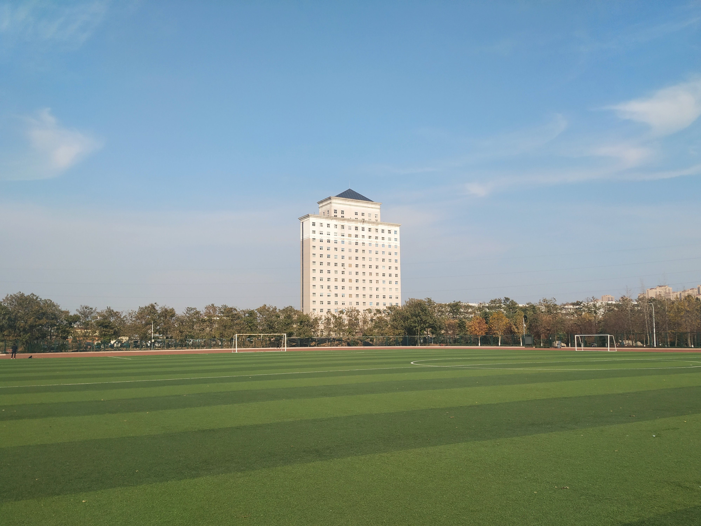

总结
——学期不知不觉已经结束了，回想起刚来时的懵懂和无知，在看看现在，当时没有对现在的预期，但此刻却深深体会到了还有很多不足，要多观察，多思考，多向大佬请教，刚开学做了十几天的临时班委，想要改变一下自己，的确，事挺多的，而且你为他人做了很多也不一定有人知道，但是这并不是我竞选的初衷，都很单纯吧，单纯的为大家服务，单纯的想让自己变得更好，期间我自己为做得中规中矩吧，期间军训有的辅导员发布的任务有些任务没有及时完成，组织大家也不够严肃，还是缺乏自信吧，在竞选正式班委时落选了，情理之外意料之中吧，但虽明知失败我还是想尝试一下，这就是勇气吧，说失败也有点绝对，福祸相依，不是吗。没有什么特别的竞争力，而后虽然有点失落，不过很快就想在实验室踏实学习的情绪冲淡了。
——加入实验室很茫然吧，东西又多又杂，不知道从何下手，在实验室期间有的时候在实验室学习目标不明确，导致白白浪费时间却没有学到东西，参加各种活动，也占用了很多时间，象棋大赛混到校赛，在练一下明年拿个冠军吧，歌手大赛没有做好准备，朗诵比赛，看人不准，决策不足，准备也不足，而且校赛选手确实很强。像我的专业（大数据）和这个实验室本身就是需要很多基础的东西，害怕投入的热情太多，最后却啥也没学会或用不到而被浇一头冷水，但是既然已近选择了路，那就要踏踏实实的把它走完。

——在聊一下学习吧，数学，基础就不咋地，上课老师照着书讲，自己偶尔自控力也很差，会睡着，课下又不会去看，考试前突击只求不挂科，不能这样了，寒假恶补一下。英语也只有上课才会听，神奇的周四我也坚持不下去，考试还是吃的高中的老底，不能这样了。C语言，实验室考试前学了数组，期末还是数组，，，不能这样了！！！！！！
——努力了，但没有反向，活得不够认真，自己给自己一个Direction。

寒假规划
___DVWA搭建，多种漏洞攻击方式，写一篇关于这个的博客，每周三道web题（buuctf），php+mysql留言板搭建，python，和C语言学习，当然数学和英语我还想再挣扎一下，哔哩哔哩学习视频多看看，打开新世界大门。英语背单词在家我肯定坚持不下来，看十部老友记然后听听解析吧，多看电影动漫，少刷短视频，也可以读点小说，明天在细分一下工作和整理一下笔记本。